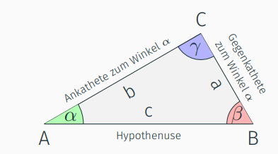
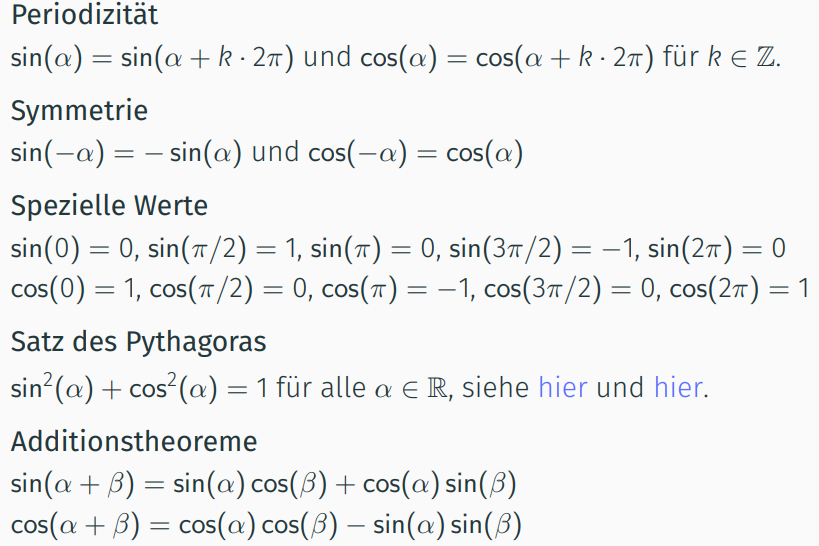

f(x) mit y ersetzen
nach x auflösen
für f^-1(x) x und y tauschen
Umkehrfunktion Rechner
Trigonometrie
𝛾 = π/2 = 90°.

sin(𝛼) = cos(𝛽) = a/b und cos(𝛼) = sin(𝛽) = b/c
tan(𝛼) = sin(𝛼)/cos(𝛼) = 1/cot(𝛼) = a/b
Winkelsumme eines Dreiecks: π = 180°
sin(𝛼) = cos(𝛽) = cos(π/-𝛼)
Begriffe

Umkehrfunktion von sin(x) ist arcsin(x)
Umkehrfunktion von cos(x) ist arccos(x)
Sinusschwingung
φ(t) = φmax*sin(ω₀*t+φ₀)
t = zeit
φmax = Maximalauslenkung des Pendels
ω₀ = Kreisfrequenz (Zeitdauer einer Schwingung T = 2π/ω₀)
φ₀ = Nullphasenwinkel (Phasenwinkel zum Zeitpunkt t = 0)
Pendel online berechner
Sinusschwingung berechnen